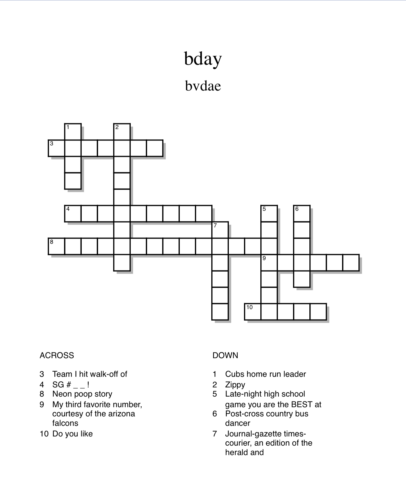

Congrats on making it to the second stage! I hope you've had a dandy time! Now for the next challenge:
There are no dashes or spaces in the above crossword. Here are the letters you must identify to move on to the third and final stage:
go to this website and enter the letters in order into the special box: https://timmoran7.github.io